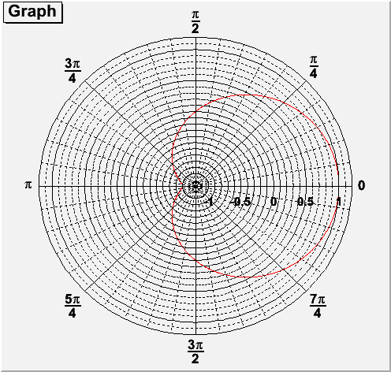
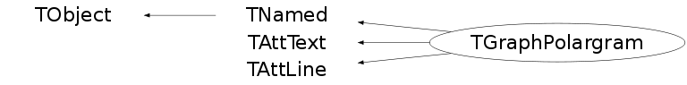

class TGraphPolargram: public TNamed, public TAttText, public TAttLine
TGraphPolargram : to draw polar axis
Example:
{kind=link}

{
TCanvas * CPol = new TCanvas("CPol","TGraphPolar Examples",500,500);
Double_t rmin=0;
Double_t rmax=TMath::Pi()*2;
Double_t r[1000];
Double_t theta[1000];
TF1 * fp1 = new TF1("fplot","cos(x)",rmin,rmax);
for (Int_t ipt = 0; ipt < 1000; ipt++) {
r[ipt] = ipt*(rmax-rmin)/1000+rmin;
theta[ipt] = fp1->Eval(r[ipt]);
}
TGraphPolar * grP1 = new TGraphPolar(1000,r,theta);
grP1->SetLineColor(2);
grP1->Draw("AOL");
return CPol;
}Function Members (Methods)
public:
protected:
| virtual void | TObject::DoError(int level, const char* location, const char* fmt, va_list va) const |
| void | TObject::MakeZombie() |
private:
| Int_t | FindAlign(Double_t angle) |
| Double_t | FindTextAngle(Double_t theta) |
| void | Init() |
| virtual void | Paint(Option_t* options = "") |
| void | PaintPolarDivisions(Bool_t noLabels) |
| void | PaintRadialDivisions(Bool_t drawaxis) |
| void | ReduceFraction(Int_t Num, Int_t Denom, Int_t& rnum, Int_t& rden) |
Data Members
public:
| enum { | kLabelOrtho | |
| }; | ||
| enum TObject::EStatusBits { | kCanDelete | |
| kMustCleanup | ||
| kObjInCanvas | ||
| kIsReferenced | ||
| kHasUUID | ||
| kCannotPick | ||
| kNoContextMenu | ||
| kInvalidObject | ||
| }; | ||
| enum TObject::[unnamed] { | kIsOnHeap | |
| kNotDeleted | ||
| kZombie | ||
| kBitMask | ||
| kSingleKey | ||
| kOverwrite | ||
| kWriteDelete | ||
| }; |
protected:
| Color_t | TAttLine::fLineColor | line color |
| Style_t | TAttLine::fLineStyle | line style |
| Width_t | TAttLine::fLineWidth | line width |
| TString | TNamed::fName | object identifier |
| Short_t | TAttText::fTextAlign | Text alignment |
| Float_t | TAttText::fTextAngle | Text angle |
| Color_t | TAttText::fTextColor | Text color index |
| Font_t | TAttText::fTextFont | Text font number |
| Float_t | TAttText::fTextSize | Text size |
| TString | TNamed::fTitle | object title |
private:
| Double_t | fAxisAngle | Set angle of the radial axis |
| Int_t | fCutRadial | if fCutRadial = 0, circles are cut by radial axis |
| Bool_t | fDegree | |
| Bool_t | fGrad | |
| Int_t | fNdivPol | Number of polar divisions |
| Int_t | fNdivRad | Number of radial divisions |
| Color_t | fPolarLabelColor | Set color of the angular labels |
| Font_t | fPolarLabelFont | Set font of angular labels |
| TString* | fPolarLabels | ![fNdivPol] Specified polar labels |
| Double_t | fPolarOffset | Offset for Polar labels |
| Double_t | fPolarTextSize | Set Polar text size |
| Color_t | fRadialLabelColor | Set color of the radial labels |
| Font_t | fRadialLabelFont | Set font of radial labels |
| Double_t | fRadialOffset | Offset for radial labels |
| Double_t | fRadialTextSize | |
| Bool_t | fRadian | |
| Double_t | fRwrmax | Maximal radial value (real world) |
| Double_t | fRwrmin | Minimal radial value (real world) |
| Double_t | fRwtmax | Minimal angular value (real world) |
| Double_t | fRwtmin | Minimal angular value (real world) |
| Double_t | fTickpolarSize | Set size of Tickmarks |
Class Charts
{kind=link}
{kind=link}
{kind=link}
{kind=link}

Function documentation
TGraphPolargram(const char* name, Double_t rmin, Double_t rmax, Double_t tmin, Double_t tmax)
TGraphPolargram Constructor.
void ChangeRangePolar(Double_t tmin, Double_t tmax)
Set the Polar range. tmin is the start number. tmax is the end number.
Int_t DistancetoPrimitive(Int_t px, Int_t py)
Everything within the circle belongs to the TGraphPolargram.
Double_t FindTextAngle(Double_t theta)
Determine the orientation of the polar labels according to their angle.
void PaintCircle(Double_t x, Double_t y, Double_t r, Double_t phimin, Double_t phimax, Double_t theta)
This is simplifed from TEllipse::PaintEllipse. Draw this ellipse with new coordinates.
void PaintPolarDivisions(Bool_t noLabels)
Draw Polar divisions. Check for editable pad or create default.
void PaintRadialDivisions(Bool_t drawaxis)
Paint radial divisions. Check for editable pad or create default.
void SetNdivPolar(Int_t Ndiv = 508)
Set the number of Polar divisions: enter a number ij with 0<i<99
0<j<99
i sets the major Polar divisions.
j sets the minor Polar divisions.
void SetNdivRadial(Int_t Ndiv = 508)
Set the number of radial divisions: enter a number ij with 0<i<99
0<j<99
i sets the major radial divisions.
j sets the minor radial divisions.
void SetPolarLabel(Int_t div, const TString& label)
Set some specified polar labels, used in the case of a spider plot.
void SetPolarLabelFont(Font_t tfontangular = 62)
void SetRangePolar(Double_t tmin, Double_t tmax)
Allows to change range Polar. tmin is the start number. tmax is the end number.
void SetRangeRadial(Double_t rmin, Double_t rmax)
Set the radial range. rmin is at center of the circle. rmax is at the intersection of the right X axis part and the circle.
TGraphPolargram(const char* name, Double_t rmin, Double_t rmax, Double_t tmin, Double_t tmax)